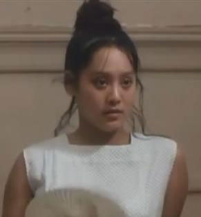
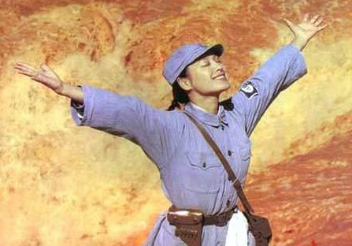
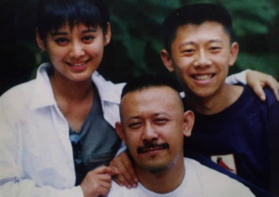
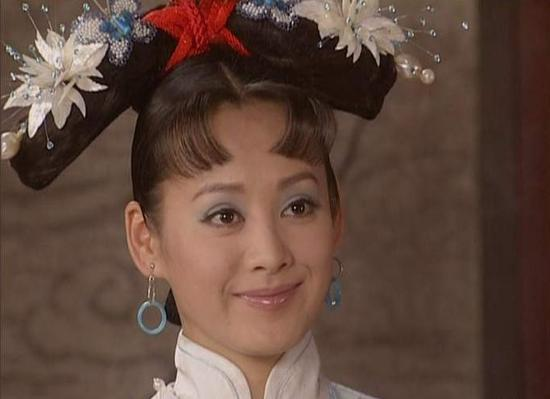
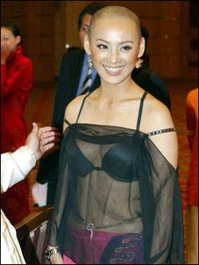

时隔二十年，年过四十的宁静身上仍然有当年“米兰”的影子，性感、大胆、泼辣，和她的名字完全不符。在镜头前，她演技过人、获奖无数；在生活中，她性格霸道、难以相处。在特立独行的人身上，优点和缺点总是相当鲜明，容易形成舆论评价的两极化，但无论哪种面孔，都是真实而不做作的，或许仅凭这一点，就足以成为力挺她的理由。
最近，随着某档旅行真人秀节目第二季的开播，郑爽和宁静成了话题女星。郑爽接棒前男友张翰担任导游，还和同行的井柏然玩暧昧，自然成了收视率一大法宝；而另一位女星宁静，如果不是因为在节目中表现得狂妄矫情、还吐槽郑爽“没文化”，恐怕我们都快忘记了，她就是二十年前，姜文电影中那个青春、热情、性感的米兰。

在节目的第一季里，许晴的“公主病”是一大槽点。到了第二季，宁静的“狂”和“作”注定成为被热炒的话题。宁静本人完全和“宁静”不沾边，她的火爆脾气在圈内由来已久，不但令郑爽“最头疼”，也让众多和她打过交道的人都印象深刻。

今年43岁的宁静成名甚早，早在成名作《阳光灿烂的日子》之前，她就因出演电影《炮打双灯》而开始走红，之后又凭借《红河谷》、《黄河绝恋》等作品两度获得中国电影百花奖、金鸡奖最佳女主角。上世纪90年代，她和巩俐基本包揽了当时所有知名电影的女主角。这一切都发生宁静在20多岁的年纪，年少成名、星途顺利，对她而言，确实有值得狂妄的资本。
不得不提的当然是《阳光灿烂的日子》中的米兰，虽然当年夏雨凭此片一举拿下威尼斯影帝和金马影帝，成为最大赢家，宁静很遗憾地没得到任何奖项，但这绝不妨碍米兰成为宁静塑造的最经典角色。那时的宁静外形丰满，散发着性感，恰恰非常符合那个年代的青春期男孩对“梦中情人”的想象。米兰和马小军之间微妙的情感，荷尔蒙旺盛分泌带来的痛苦、妒忌与疯狂，是每个人都经历过的青春岁月。

宁静与姜文的二度合作是十年后的《寻枪》。宁静不再是《阳光灿烂的日子》中的米兰，戏份也少了很多。曾经的青春逝去，增添了几分妩媚和时尚。
2000年以后，宁静基本淡出了影坛，人们偶尔能在电视剧中看到她的身影。最为知名的是2003年的《孝庄秘史》，宁静饰演的“大玉儿”一角颇受好评，成为当年的收视热门。
宁静算是圈内少有的长相出众还会演戏的女演员，但宁静本人对自己的“颜值”并不满意，曾用“张牙舞爪”这个词来形容。出生于西南边陲贵州，宁静的脸上天生带有大气与野性的魅力，性格也如少数民族一般豪放率真。讨厌她的人说她不知天高地厚，喜欢她的人说她有个性。
宁静在圈内被封为“戏霸”，她本人对此也不讳言，曾经自嘲““年年评戏霸我都榜上有名”。宁静在剧组严肃认真，时常与导演争论，如果导演不能说服自己，她就会很恼火，觉得没有得到自己想要的东西。而面对看不惯的剧组乱象，她也永远如侠女般路见不平一声吼，直到把旁人都震慑了为止。

宁静的“霸道”在最近的真人秀节目中也体现得淋漓尽致。她从一开始就给节目组出难题。先是说自己有肺炎，要求自掏腰包带随行医生，然后是对导游郑爽发来的注意事项挑三拣四，还因为理解有误大呼“不去了”。到达伦敦后，宁静也对“大姐”毛阿敏规定的作息时间不以为然，总是在出发前不紧不慢地化妆试衣，让所有同伴在楼下苦等。
姜文就曾说宁静是“女演员里的一颗定时炸弹”，既称赞宁静演技优秀，日后一定大火，“炸弹”一词又精确地描述了宁静的性格。她敢于剃光头、敢于裸胸露背，对私生活也从不遮遮掩掩。
宁静与前夫保罗
宁静与前夫保罗相识于1996年拍摄的电影《红河谷》，次年初结婚，1998年生下一子。1999年，两人又合作拍摄了冯小宁的电影《黄河绝恋》。2011年，宁静首度承认因文化差异已与保罗离婚。
对于是否有再婚打算，宁静曾表示：“我想结就结喽，不会跟任何人打招呼，就像我当初生孩子的时候都没告诉我父母。”
自我、张扬、特立独行，宁静就是这样，想说就说，想做就做，对事业如此，对生活亦如此。在这个女星喜欢装小清新、装“圣母”“白莲花”的时代，我们看惯了太多虚伪的美好，“狂妄自大”的宁静反而成了这个圈子里的稀有品种。当然，“德艺双馨”型的艺人仍然值得被肯定、被拥护，但完美的人总是少之又少，如果要“退而求其次”的话，真实的霸道与伪装的温柔之间，恐怕还是前者更为可取。